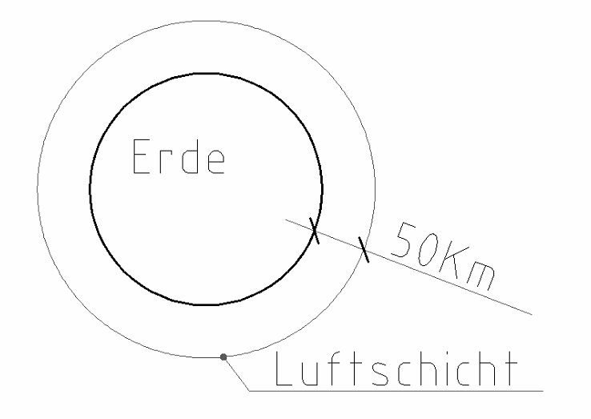
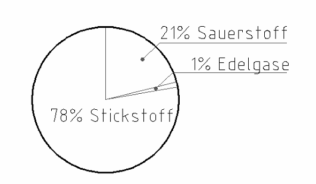
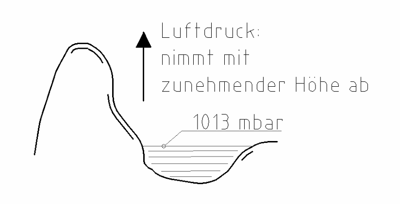
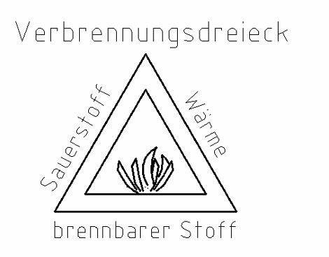

1 Luft
Ohne Luft gibt es kein Leben und kein Feuer.
Auch eine Heizung mit Gas oder Holz braucht Luft.
Die Luftschicht der Erde

Die Luft liegt wie eine Hülle um die Erde.
Diese Luftschicht ist ca. 50 km dick.
Bestandteile der Luft

Luft ist ein Gemisch aus drei Teilen:
| Bestandteil | Anteil |
|---|---|
| Stickstoff | 78 % |
| Sauerstoff | 21 % |
| Edelgase | 1 % |
Den Sauerstoff brauchst du zum Atmen. Das Feuer braucht ihn auch zum Brennen.
Luftdruck

Die Luft hat ein Gewicht. Sie drückt auf alles. Das ist der Luftdruck.
Am Meer (auf Meeresniveau) beträgt er ca. 1013 mbar.
Je höher du bist (je größer die Seehöhe), desto kleiner ist der Luftdruck.
Der Luftdruck hängt auch vom Wetter ab.
mbar (sprich „Millibar“) ist eine Einheit für den Druck.
Verbrennung

Für eine Verbrennung brauchst du drei Dinge:
- Sauerstoff
- Wärme
- einen brennbaren Stoff (z. B. Holz, Gas, Öl)
Das zeigt das Verbrennungsdreieck.
Fehlt eine Seite vom Dreieck, geht das Feuer aus.
Beispiel: Eine Löschdecke nimmt dem Feuer den Sauerstoff.
Tippe die richtige Antwort an. Dann tippe auf „Prüfen“.
Aufgabe 1
a) Wie dick ist die Luftschicht der Erde?
b) Wie viel Stickstoff ist in der Luft?
c) Wie viel Sauerstoff ist in der Luft?
Aufgabe 2
a) Wie groß ist der Luftdruck am Meer?
b) Du gehst auf einen hohen Berg. Was passiert mit dem Luftdruck?
c) Wovon hängt der Luftdruck noch ab?
Aufgabe 3
a) Was gehört nicht zum Verbrennungsdreieck?
b) Du legst eine Löschdecke auf ein Feuer. Was fehlt dem Feuer jetzt?